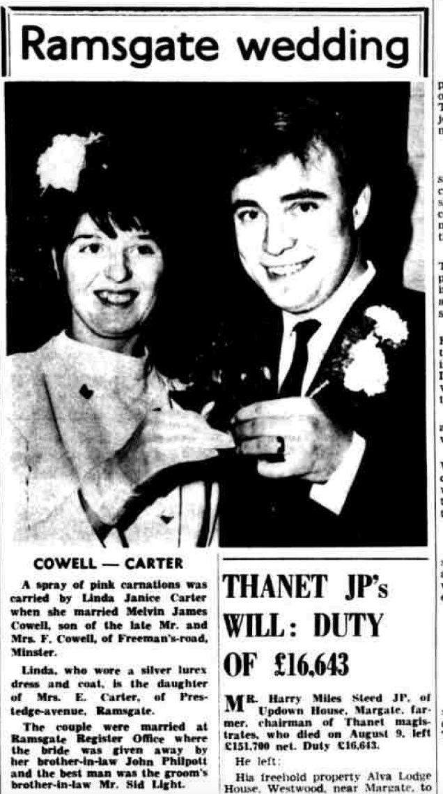
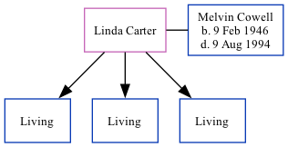

Linda Janice Cowell (née Carter)
[ Home ] | [ Calendar ] | [ Surnames Index ] | [ Family History ]Linda Carter, the wife of Melvin James Cowell (the cousin on the mother's side of Nigel Horne), and married Melvin (with whom she had 3 surviving children Mark James, Graham Edward and Leigh Robert) at Ramsgate Register Office, Ramsgate, Kent, England around Nov 19671.
Citations
- England & Wales, Marriage Index: 1916-2005 Online publication - Provo, UT, USA: The Generations Network, Inc., 2009.Original data - General Register Office. England and Wales Civil Registration Indexes. London, England: General Register Office. © Crown copyright. Published by permission of the Cont
Media
East Kent Times and Mail - 5 Jan 1968

England & Wales marriages 1837-2008 - BMD/M/1967/4/AZ/000243/050
England & Wales births 1837-2006 - BMD/B/1946/1/AZ/000273/139
Family Tree
Generated by ged2site. Last updated on Nov 13, 2024